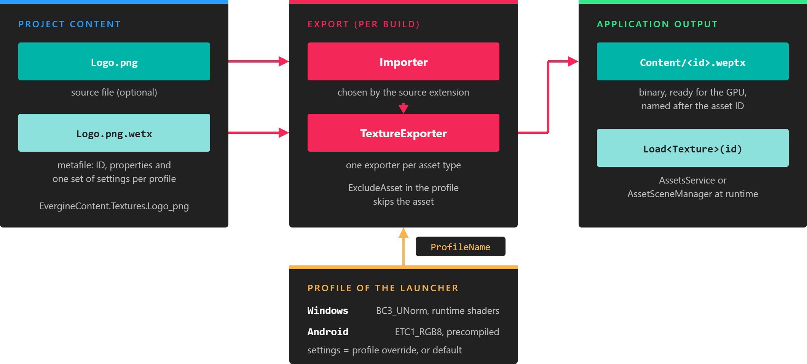

Export Assets

Exporting turns each asset into a binary file that is ready to load on the target platform.
Evergine does not load source files such as .png or .fbx at runtime. When you build a launcher project, each asset is exported: its source file is imported, processed with the settings of the target profile, and written to a binary file that the engine can load quickly. An exported model, for example, contains vertex and index data that is copied straight into GPU buffers.
Note
Evergine can import some source files at runtime with AssetsService.Load<T>(name, stream), which is useful for content downloaded by the application. That path relies on the importers of the Evergine.Assets assembly, is slower, uses more memory, and ignores the properties you set in Evergine Studio. See Use Assets.
When assets are exported
Assets are exported as part of the build of each launcher project, such as MyProject.Windows. The build uses the profile of that launcher, writes the exported files to an intermediate folder so that unchanged assets are not exported again, and copies them to the Content folder next to the application binaries. File > Build & Run in Evergine Studio builds and starts a Windows profile, and exports its assets on the way.
The exported files are named after the asset ID, for example Content/01221b69-9685-4f0d-9862-6be704bd3cd2.weptx. Your code does not need these names: it loads assets through the IDs in EvergineContent.
Export pipeline
For every asset in the Content folder of the project and of its add-ons, the export does the following:
- Reads the asset metafile.
- Looks for the settings of the profile being built. If the asset overrides that profile (OverridesDefaultProperty in its editor), those values are used; otherwise the default profile values are used.
- Skips the asset if ExcludeAsset is enabled in the chosen settings.
- Imports the source file, if the asset has one, with the importer that matches its extension.
- Runs the exporter of the asset type, which writes
<asset id>.<exported extension>to the output.
Assets marked with Set to export as raw take a shortcut: the source file is copied to the output with its original name and folder, and a small <asset id>.wepidx index file records where it is, so LoadRaw<T> can find it by ID.
Exported file extensions
| Asset type | Metafile | Exported file |
|---|---|---|
| Texture | .wetx |
.weptx |
| Model | .wemd |
.wepmd |
| Sound | .wesn |
.wepsn |
| Font | .weft |
.wepft |
| Scene | .wesc |
.wepsc |
| Prefab | .weprf |
.wepprf |
| Effect | .wefx |
.wepfx |
| Material | .wemt |
.wepmt |
| Render Layer | .werl |
.weprl |
| Sampler | .wesp |
.wepsp |
| Particle System | .weps |
.wepps |
| Post-Processing Graph | .wepp |
.weppp |
| Reflection probe (scene sub-asset) | .werp |
.weprp |
| File, or any asset exported as raw | .wefile |
The original file, plus .wepidx |
Per-profile export
Because the profile is chosen at export time, the same project produces different content for each platform. Typical uses are:
- Compressing textures with a GPU format that the platform supports, such as
BC3_UNormon Windows orETC1_RGB8on Android. The default formats come from the profile; see Manage Profiles. - Scaling textures down on mobile devices.
- Precompiling effects for platforms that cannot compile shaders at runtime, such as Web and Android.
- Excluding assets that a platform does not use.
Set these values in the profile tabs of each asset editor, as described in Edit Assets.